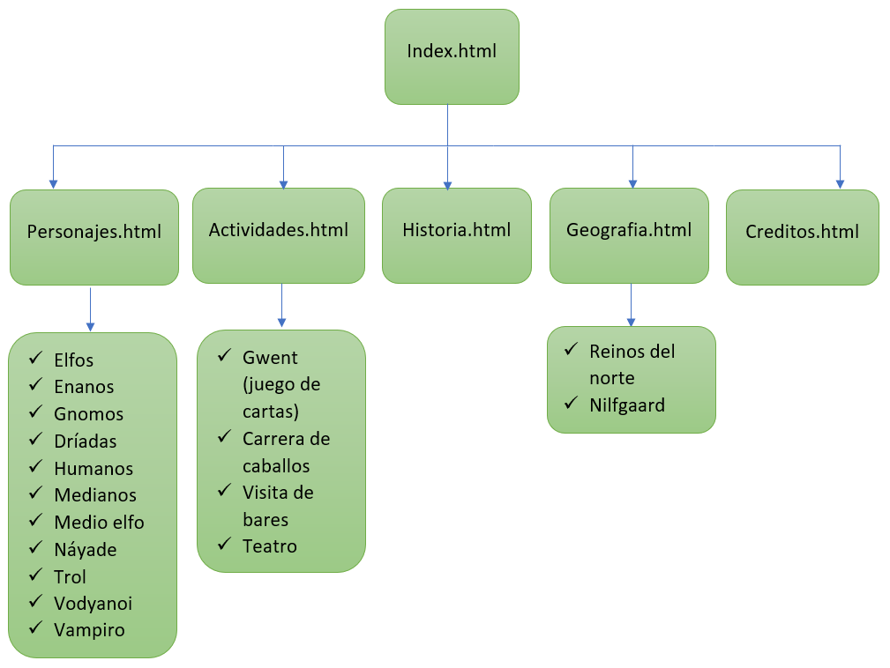

EL CONTINENTE
Geografía
Historia
Razas
Actividades
Creditos
Mapa de navegacion

Autor:
Luis Antonio Zuluaga Ramirez
Creditos de imagenes y contenido del texto
Wiki the witcher
Sitio oficial CD-PROJEKT
Creditos fuente
Las fuentes tipograficas se obtuvieron dels sitio web
dafont